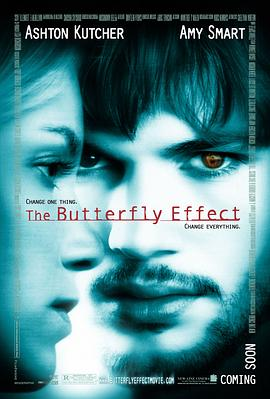

蝴蝶效应 / The Butterfly Effect
前75%剧情还是比较吸引人的，中间20%感到疲惫，最后5%出乎意料。
作品信息
| 导演 | 埃里克·布雷斯 / J·麦基·格鲁伯 |
| 编剧 | J·麦基·格鲁伯 / 埃里克·布雷斯 |
| 主演 | 阿什顿·库彻 / 梅洛拉·沃尔特斯 / 艾米·斯马特 / 埃尔登·亨森 / 威廉姆·李·斯科特 / 约翰·帕特里克·阿梅多利 / 艾琳·戈洛瓦娅 / 凯文·G·施密特 / 杰西·詹姆斯 / 罗根·勒曼 / 莎拉·威多斯 / 杰克·凯斯 / 卡梅隆·布莱特 / 埃里克·斯托尔兹 / 考乐姆·吉斯·雷尼 / 凯文·杜兰 |
| 类型 | 剧情 / 科幻 / 悬疑 / 惊悚 |
| 制片国家/地区 | 美国 / 加拿大 |
| 语言 | 英语 |
| 上映日期 | 2004-01-23(美国) |
| 片长 | 113分钟 / 120分钟(导演剪辑版) |
| IMDb | tt0289879 |
说过什么
2014-02-03 21:48:57
看过 · 时间来自广播，短评来自标记页
前75%剧情还是比较吸引人的，中间20%感到疲惫，最后5%出乎意料。
最后一次看到是 2026-08-01T11:07:14+10:00 · 豆瓣原页